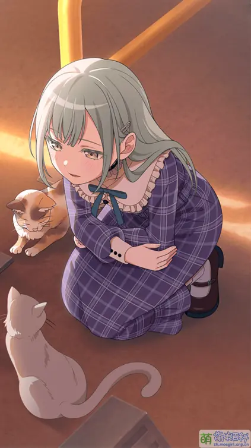
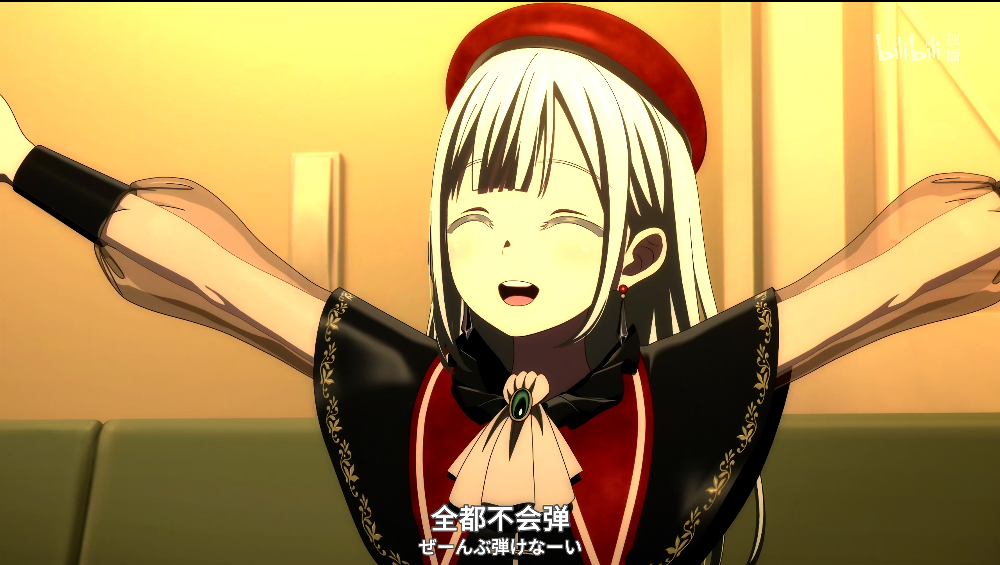

个人简介
Mortis 取自 Lacus Mortis（死湖），意指死亡。
担当：吉他手
生日：1月14日
星座：摩羯座
月之森女子学园高中1年级。曾是 CRYCHIC 的吉他手。
情感表达不多，基本上是一个沉默寡言的人。父亲是知名喜剧艺人若叶，母亲是女演员森美奈美。
与祥子互为青梅竹马，自幼学习吉他，技艺精湛。
代表色： #779977
CV： 渡瀬结月

若叶瞳 / Mortis（モーティス）
Mortis 取自 Lacus Mortis（死湖），意指死亡。
担当：吉他手
生日：1月14日
星座：摩羯座
月之森女子学园高中1年级。曾是 CRYCHIC 的吉他手。
情感表达不多，基本上是一个沉默寡言的人。父亲是知名喜剧艺人若叶，母亲是女演员森美奈美。
与祥子互为青梅竹马，自幼学习吉他，技艺精湛。
代表色： #779977
CV： 渡瀬结月
若叶睦出身演艺世家，自幼在聚光灯下长大。为应对社交，她从小习惯扮演不同角色：在家安静如人偶，在外活泼开朗。接触吉他后，家庭中寡言的“睦”逐渐成为主人格。
初中时与丰川祥子组建CRYCHIC乐队。因祥子家中变故退队时，睦一句“从没觉得玩乐队开心过”导致乐队解散，从此对祥子怀有深深负罪感。
高中时期，睦在祥子新乐队Ave Mujica中担任吉他手（代号Mortis）。因身份曝光和媒体压力，她精神逐渐崩溃，衍生出保护型人格“Mortis”。在巡演中，Mortis取代睦主导身体，行为日渐异常，甚至声称不会弹吉他。经过与乐队成员和MyGO!!!!!的互动，特别是在一次即兴演出后，睦最终在乐队重组演出中找回自我，与Mortis达成和解。
乐队风波平息后，睦回归平静生活，继续在月之森就读，并种植苦瓜。她仍在思考自己弹吉他时究竟是真实表达还是表演，但已能更好地面对自我与外界的关系。
若叶睦最早于2022年7月在《BanG Dream! Morfonication #2》中登场，早于Ave Mujica乐队公布。官方曾两次打错其名字，误写为"若叶陆"和"若叶眸"。
角色设定上，睦使用七弦重型吉他演奏重金属音乐，喜爱黄瓜（种植黄瓜、使用黄瓜主题头像），常饮芒果汁。她台词极少且言语简短，却总能直指问题核心。长期以面无表情著称，但在《Ave Mujica》OP中展现了令人惊讶的狰狞笑容。
剧情中，睦的第二人格Mortis完全不会弹吉他，被戏称为"最菜吉他手"。Mortis的言行模仿了剧中多个名场面，声优渡瀬结月本人也不熟悉吉他，形成有趣的逆输入。B站上架了Mortis"全~都不会弹！"（ぜーんぶ弾けなーい）的免费表情。
官方多次强调睦与祥子"互为半身"的关系，杭州"祥睦桥"成为粉丝打卡圣地。值得一提的是，同样在杭州拱墅区还发现了"华祥桥"，与三角初华的粉丝期待形成呼应。
早期观众基于睦祥两人外貌相似、艺术字配色、地名关联等证据提出"祥睦姐妹论"，虽未获官方证实但引发广泛讨论。随着剧情发展和生日信息公布，这一假说逐渐淡化。